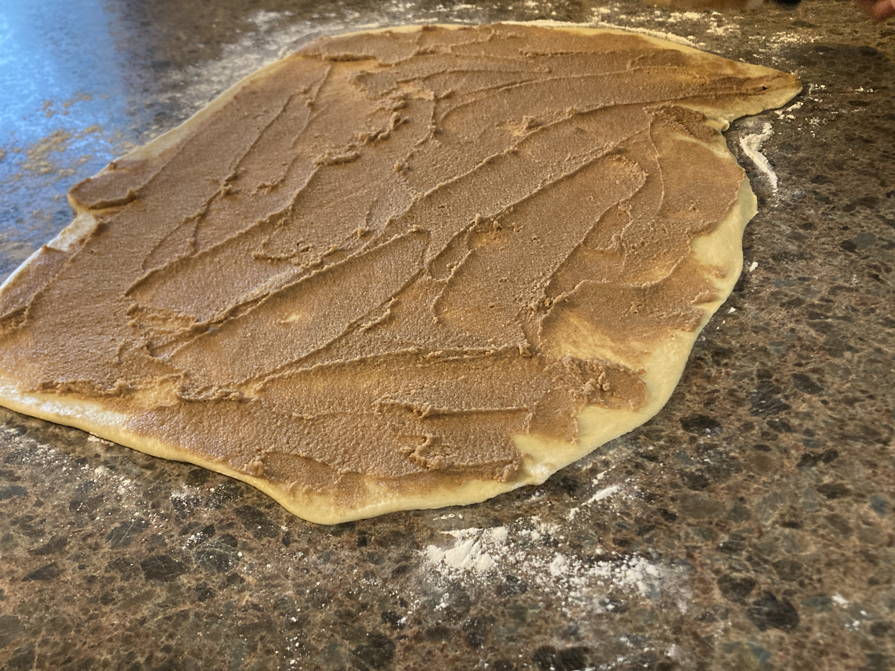
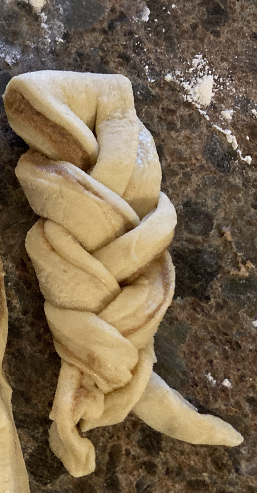

Two cinnamon roll recipes!
Here are my two favoriet cinnamon roll recipes:
- Fluffy Cinnamon Rolls
- Braided Cinnamon Rolls
Fluffy Cinnamon Rolls
Braided Cinnamon Rolls
Bake for 15 to 20 minutes at 375F or until internal temp reach 190-200F
Ingredients for the dough:
- 200g milk
- 2 eggs
- 600g flour
- 7 to 10g yeast
- 50g sugar
- 10g salt
- 200g butter or crisco
Ingredients for the shmear:
- 150g butter or crisco
- 250g brown sugar
- 2 tsp cinnamon
- 1 egg yolk (optional)
Ingredients for the glaze
Directions
- Dissolve yeast in warmed milk (105-115 degrees F), eggs, and sugar.
- In a large bowl add yeast mixture to flour. Add salt and softened butter. Combine and let rest for 5 min.
- After 5min, flatten and fold dough. Let rest for five minutes. Then flatten and fold dough again. Repeat once more. In total, the dough should rest 3 times for 5 min and flattened and folded 3 times.
- After dough has been flattened and folded 3x, let rest in large bowl (covered with grease) for about an hour.
Shmear directions
- While dough rises combine softened butter, brown sugar, cinnamon, and egg yolk to create the smear.
Directions continued
- After an hour grease workspace and flatten dough into a rectantgle. Spread shmear onto dough.

- Fold dough in half hotdog style. Slice it into 24 stripes.
On each slice make two additonal slices to make three strands.
Braid strands together then roll up and place in muffin tray.

- Brush breaded roll with egg white and place in oven (375F) for 15 to 20 minutes or until internal temperature reach between 190 to 200 degrees F.
- Make sugar glaze while rolls bake. Heat water and sugar together to create light syrup.
Pour syrup over rolls while they are cooling.
Return to home page.